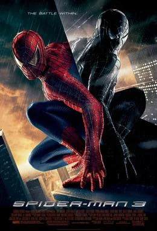
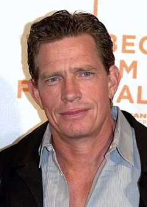
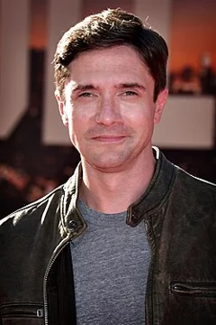
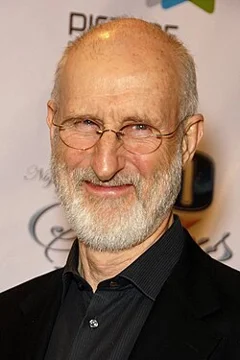

Spider-Man 3 (2007)
| Movie | Release Date | Poster |
|---|---|---|
| Spider-Man 3 PG-13 · 2h 19m · action · thriller · superhero |  |
| Trailer |
|---|
| Rotten Tomatoes | Metacritic | IMDb |
|---|---|---|
| 62% | 59/100 | View on IMDb |
| Overview |
|---|
Spider-Man 3 is a 2007 American superhero film directed by Sam Raimi, who co-wrote it with his brother Ivan and Alvin Sargent. Based on the Marvel Comics character Spider-Man, it is the final film in Raimi's Spider-Man trilogy and the sequel to Spider-Man 2 (2004). Tobey Maguire stars as Peter Parker / Spider-Man, alongside Kirsten Dunst, James Franco, Thomas Haden Church, Topher Grace, Bryce Dallas Howard, James Cromwell, Rosemary Harris, and J. K. Simmons. Set a year after the events of Spider-Man 2, the film follows Peter as he prepares for his future with his girlfriend Mary Jane Watson, while facing the Sandman, Venom, and his vengeful friend Harry Osborn. Full plot (spoilers)Peter Parker plans to propose to Mary Jane Watson , who has made her Broadway debut. While he is on a date with her in Central Park , an extraterrestrial symbiote oozes out of a fallen meteorite and attaches to his moped. Harry Osborn , knowing Peter is Spider-Man, seeks to avenge the death of his father Norman . He uses his father's performance-enhancing gas and Green Goblin technology to battle Peter, but falls from his glider and develops partial amnesia, forgetting that Peter is Spider-Man. Shortly after, Peter saves Gwen Stacy , daughter of police captain George Stacy , from falling from a skyscraper. Meanwhile, police pursue the escaped convict Flint Marko , who visits his wife and sick daughter before fleeing. He falls into a particle accelerator which fuses his body with sand, turning him into Sandman and granting him the ability to reform his body at will. During a ceremony honoring Spider-Man, Peter kisses Gwen to please the crowd, which angers Mary Jane. Soon after, Marko robs an armored truck and fights Spider-Man, then flees. Captain Stacy informs Peter and Aunt May that Marko was Ben 's true killer; the initial suspect was simply Marko's accomplice. When Peter falls asleep in his Spider-Man suit, the symbiote integrates into the suit. Peter awakens atop a building, discovering that the symbiote has turned his suit black, enhanced his powers, and increased his aggression. Peter battles Marko in a subway station. Realizing that water weakens him, Peter forces open a pipe, which turns Marko into mud and washes him away. Peter's new arrogant attitude alienates Mary Jane, who kisses Harry before quickly regretting it. A hallucination of his father prompts Harry to recover from amnesia, and he blackmails Mary Jane into breaking up with Peter. Harry tells Peter that he is dating Mary Jane, which leads Peter to fight him while under the symbiote's influence. During the fight, Harry's face is disfigured by one of his own pumpkin bombs . At the Daily Bugle , Peter exposes the misconduct of his rival photographer Eddie Brock , whose fake photos falsely incriminate Spider-Man. Editor J. Jonah Jameson fires Brock and promotes Peter to staff photographer. Peter brings Gwen to a jazz club where Mary Jane now works, hoping to make her jealous. Realizing Peter's intentions, Gwen apologizes to Mary Jane and leaves. Peter assaults the bouncers and accidentally hits Mary Jane, before realizing how deeply the symbiote is corrupting him. He retreats to a church bell tower, where he discovers that the sound of clanging metal weakens the symbiote. Using the sound of the church bell, Peter detaches it from himself. Brock witnesses the event, then becomes the symbiote's new host and turns into Venom . Brock and Marko join forces against Spider-Man, kidnapping Mary Jane to draw Peter out. After Harry declines to help Peter rescue Mary Jane, Harry's butler reveals that Norman's death was not Spider-Man's fault. As Brock and Marko capture Peter, Harry arrives and helps Peter subdue Marko. Brock attempts to impale Peter with Harry's glider, but Harry jumps in the way and is impaled instead. Remembering the symbiote's weakness, Peter uses metal pipes to create a sonic attack, which allows him to separate the symbiote from Brock. Peter throws a pumpkin bomb at the symbiote, but not before Brock, now addicted to its influence, rushes towards the symbiote, which causes him to be killed along with it. Marko explains to Peter that Ben's death was an accident and that everything Marko has done was to help his daughter. Peter forgives Marko and allows him to leave. Harry reconciles with Peter before he dies from his injuries. After Harry's funeral, Peter visits Mary Jane at the jazz club, where they share a dance. |
| Actor | Character | Photo |
|---|---|---|
| Tobey Maguire | Peter Parker / Spider-Man A student at Columbia University who fights crime as a masked vigilante. | No photo |
| Kirsten Dunst | Mary Jane Watson Peter's girlfriend who makes her debut on Broadway . |  |
| James Franco | Harry Osborn / New Goblin Peter's former best friend who believes Peter killed his father, Norman Osborn . |  |
| Thomas Haden Church | Flint Marko / Sandman An escaped convict who transforms into the shapeshifting Sandman after a freak accident. |  |
| Topher Grace | Edward "Eddie" Brock Jr. / Venom Peter's rival photographer at the Daily Bugle who becomes possessed by an extraterrestrial symbiote. |  |
| Bryce Dallas Howard | Gwen Stacy Peter's lab partner in his physics class. | |
| James Cromwell | Captain George Stacy Gwen's father and an NYPD captain. |  |
| Rosemary Harris | May Parker Peter's aunt. |  |
| J. K. Simmons | J. Jonah Jameson The editor of the Daily Bugle . |  |
| Dylan Baker | Curt Connors | No photo |
| Bill Nunn | Robbie Robertson | No photo |
| Elizabeth Banks | Betty Brant | No photo |
| Theresa Russell | Emma Marko | No photo |
| Ted Raimi | Ted Hoffman | No photo |
| Elya Baskin | Mr. Ditkovich | No photo |
| Mageina Tovah | Ursula Ditkovich | No photo |
| Cliff Robertson | Uncle Ben | No photo |
| Willem Dafoe | Norman Osborn | No photo |
| Bruce Campbell | – | No photo |
| Joe Manganiello | Flash Thompson | No photo |
| Lucy Liu | – | No photo |
| Michael Papajohn | Burglar | No photo |
| Perla Haney-Jardine | – | No photo |
| Stan Lee | – | No photo |
| Elisha Cuthbert | – | No photo |
| Detail | Value |
|---|---|
| Directed by | Sam Raimi |
| Written by | Ivan Raimi, Alvin Sargent, Sam Raimi |
| Produced by | Avi Arad, Laura Ziskin, Grant Curtis |
| Music by | Christopher Young |
| Cinematography | Bill Pope |
| Edited by | Bob Murawski |
| Production companies | Columbia Pictures, Marvel Entertainment |
| Distributed by | InterCom, Sony Pictures, Netflix, Disney+ |
| Running time | 139 minutes |
| MPAA rating | PG-13 |
| Budget | $258 million |
| Box office | $891 million |
Overview, plot, and cast descriptions are from Wikipedia (CC BY-SA 4.0). Credits, ratings, and box office are from Wikidata.